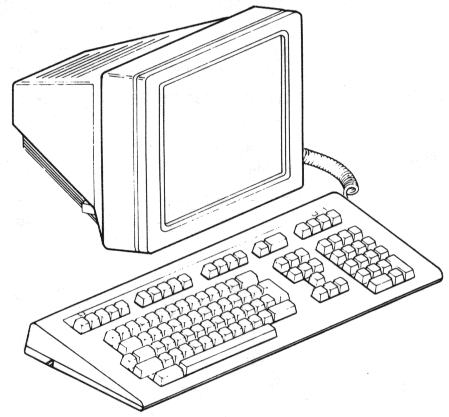
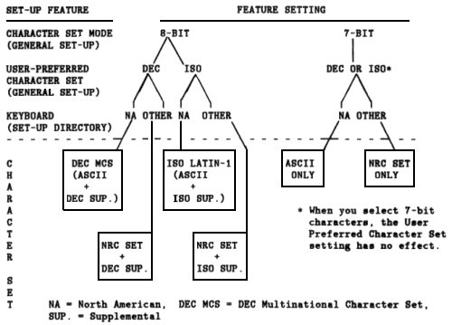

| Chapter 1 | Contents | Chapter 3 |
The VT320 is a general-purpose video display terminal that lets you interact with software applications on a host computer system. This chapter provides a brief overview of the VT320 terminal and how it operates.
The VT320 terminal has two main components, a monitor/terminal unit and keyboard (Figure 2-1). The monitor/terminal unit is simply called the terminal in the rest of this manual.
|  |
The VT320 uses a 356 mm (14 in) monochrome screen that can display 24 lines of text, in 80 or 132 columns. Line 25 is reserved for the terminal's status line. You can connect the terminal to a host computer, terminal server, or modem. You can also connect a printer directly to the terminal.
The keyboard has four groups of keys and four indicator lights, described in Chapter 3. The main keypad is similar to a typewriter keyboard. The keyboard cable connects to the right side of the terminal.
There are 15 models of the VT320 keyboard available, for different languages. Appendix D shows the 15 keyboards.
You use the keyboard to interact with an application on your system. You send data to the application by typing on the keyboard. Data sent by the application appears as text on the screen. You can print text from the VT320, if you have a printer connected to the terminal.
Applications use programming functions to perform many operations. The VT320 can work with standard American National Standards Institute (ANSI) functions.
The VT320 has a series of set-up screens that list the operating features of the terminal. You can display these screens and change feature settings from the keyboard.
For example, the VT320 has an On-Line/Local feature. You can only set this feature from set-up. When you use the "On-Line" setting, the VT320 can communicate with your host system.
To enter set-up, you press the Set-Up key. Chapter 4 describes set-up.
The VT320 can also operate as a VT200 series, VT100 series, or VT52 terminal. You select the operating mode from the General Set-Up screen (Chapter 4). There are four possible settings.
The factory default setting is VT300 mode, 7-bit controls. This mode is fully compatible with VT200 series terminals. Use this mode for VT200 applications. Factory-default settings are the initial settings the terminal uses when shipped from the factory. These settings are permanently stored in the terminal's memory. You can use set-up to reset the VT320 to the factory-default settings at any time.
The VT320 has two types of built-in character sets, for use with different types of computer systems.
You can select from 2 multinational sets or 12 national replacement character sets (NRCs). You use the Character Set Mode feature in the General Set-Up screen (Chapter 4) to select the type of character set: "8-Bit Characters" for multinational sets, or "7-Bit Characters" for NRC sets.
When you first use your VT320, the terminal uses the DEC Multinational character set. This set contains the characters for the English language, plus most characters used in the Western European languages. Use this set with applications that require strict compatibility with VT200 series terminals.
You can also select the ISO Latin-1 character set of the International Standards Organization. ISO Latin-1 is the new industry-standard set. It is similar to the DEC Multinational character set, with a few different symbols and characters.
Both multinational sets include the standard ASCII character set of the American Standard Code for Information Interchange.
NRC sets are for 7-bit computing environments. Each NRC set is for a particular Western European language or dialect. NRC sets are similar to the ASCII set, but replace a few ASCII characters with characters used in that language or dialect.
You can only use one NRC set at a time. You select the NRC set by setting the Keyboard feature in the Set-Up Directory (Chapter 4).
If you set the Character Set Mode feature in the General Set-Up screen to "7-Bit Characters", you cannot use the 8-bit multinational character sets. However, if you set Character Set Mode to "8-Bit Characters" you can still use an NRC set. In that case, the NRC set replaces the ASCII set.
Figure 2-2 summarizes how to select a character set by using set-up features. Appendix E shows each character set.
|  |
The VT320 has a CRT saver feature to extend the life of the terminal's screen. The screen automatically goes blank if the terminal is inactive for 30 minutes (no keyboard activity or input from the host system). You do not lose the data that was displayed. To reactivate the screen, press any key.
When the CRT saver feature is on, a blinking block cursor appears at the lower-right corner of the screen. The cursor indicates that the terminal is still on and the CRT saver feature is activated.